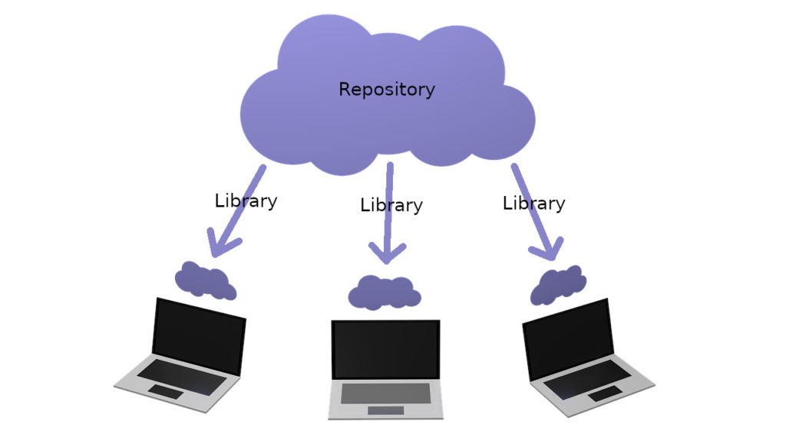
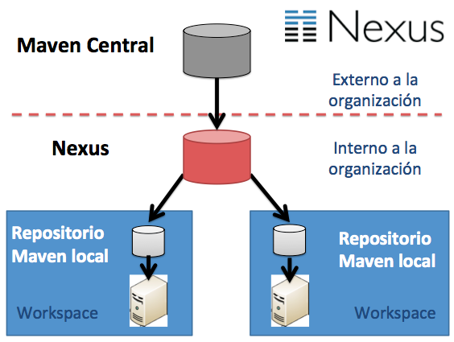

Homepage
Change
INFRASTRUCTURE AS A SERVICE
DEVOPS
Package
What is?
A code repository is what we all know, where we store our code remotely for security, to be able to share it with others or simply for good practices. Classic examples would be Github, Bitbucket, or Gitlab. An artifact repository, on the other hand, is where we store binary files or compiled packages derived from our code, like an .aar file from an Android library, for example
Proved Repository

Artifact Repository

---------